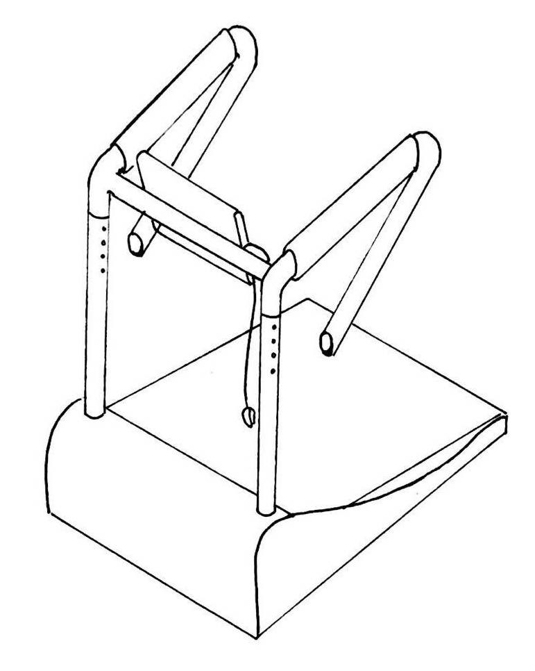
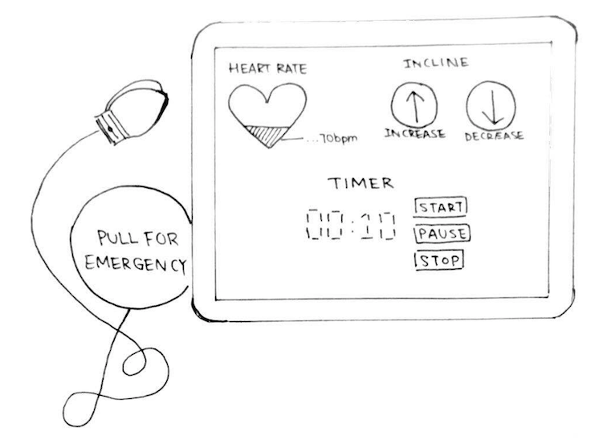
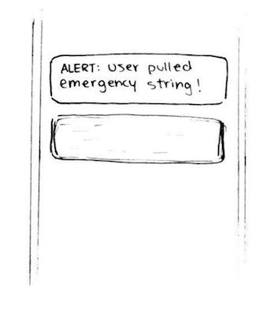
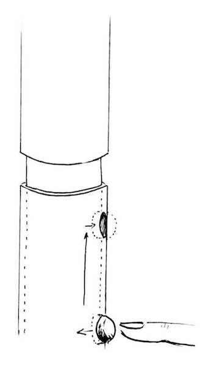

×
Level UP
Situation Impact Statement
To design an exercise device to be used by older adults on a daily basis in order to efficiently reduce the risk of falling by strengthening their quadricep muscles and can be used safely and independently from any external aid.
Description
Last term, our group completed our SYDE161 (Introduction to Design) design project with the aim of increasing the strength of balance-related muscles in older adults. After conducting testing and research, the high fidelity prototype was built as an aerobics platform that is elevated above the ground and can be inclined to provide a higher challenge. It has adjustable-height handles around the sides of the machine to provide support while exercising and a safety alert system that rings bells if the user falls while exercising to call the attention of nearby passersby or family members.



